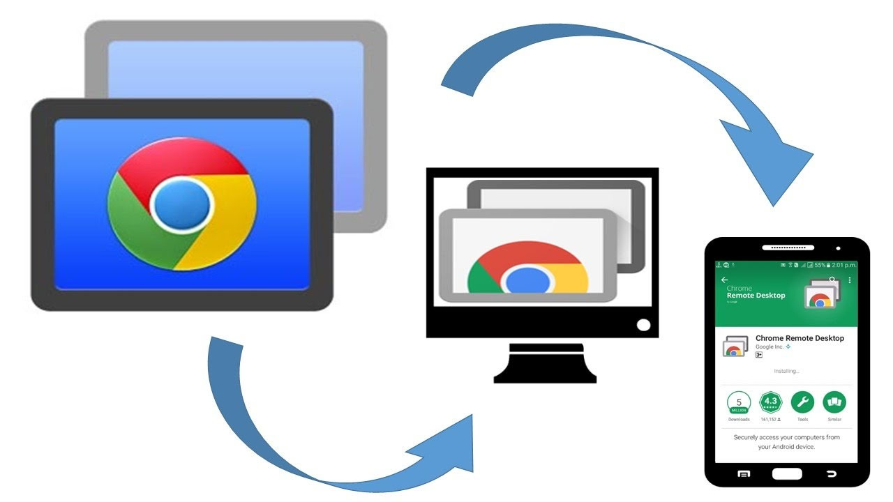

Chrome Remote Desktop Review: Everything You Need to Know Before Using It
Remote desktop tools are essential in today’s digital landscape, enabling everything from remote work to IT support. Among these tools, Chrome Remote Desktop stands out as a free, user-friendly solution. But is it truly the best choice? In this review, we’ll explore Chrome Remote Desktop’s core features, its real-world performance, and how it compares to alternatives like UltraViewer. By the end, you’ll know whether it meets your needs or if you should consider a more robust option.
What is Chrome Remote Desktop and Why It Matters
Chrome Remote Desktop is a free tool from Google that allows users to access their devices remotely. Known for its simplicity and seamless integration with Chrome, it’s become a go-to choice for casual and professional users. Its cross-platform support makes it accessible from almost any device, providing essential remote access functionality without the need for expensive software.

Why is it important?
- Free and Accessible: No cost and minimal setup barriers make it appealing.
- Cross-Platform Support: Available on Windows, macOS, Linux, iOS, and Android.
- Ease of Use: Designed for users of all technical levels, from beginners to experts.
Chrome Remote Desktop has democratized remote access. Its widespread popularity stems from its simplicity and the fact that it’s free. For basic remote control or file access, it does a good job. However, for more advanced business or technical needs, it may fall short.
Key Features of Chrome Remote Desktop and Applications
Chrome Remote Desktop provides a streamlined set of features designed for simplicity and accessibility:
-
Easy Setup:
Installing Chrome Remote Desktop is straightforward. Simply add the extension to your Chrome browser, link it to your Google account, and you’re ready to connect remotely. No complex configurations are needed, making it ideal for beginners. -
Cross-Platform Compatibility:
This tool works seamlessly across multiple operating systems, including Windows, macOS, Linux, Android, and iOS. This broad compatibility ensures you can connect to your devices from virtually any platform. -
Remote Control Access:
Gain full control over a remote device as if you were physically present. This is useful for basic tasks such as accessing documents, troubleshooting, or managing software. -
Security Measures:
Chrome Remote Desktop prioritizes security by using AES encryption and a PIN-based system for authentication. This combination ensures your remote sessions are secure and data remains protected from unauthorized access.
Use Cases:
- Remote Work: Access your office desktop from home.
- Technical Support: Help family or colleagues resolve computer issues remotely.
- Education: Students and teachers can share screens for tutoring or troubleshooting.
Performance and Usability: Real-World Impressions
In everyday use, Chrome Remote Desktop delivers a reliable experience. Connections are generally stable, with minimal lag, even on moderate internet connections. However, performance can degrade with high-resolution displays or multiple monitors.
I tested Chrome Remote Desktop on different systems, including a Windows laptop and a MacBook Pro. Setup was smooth, and the connection remained stable for tasks like document editing and simple software management. However, it struggled with graphics-intensive tasks, highlighting its limitations compared to paid solutions.
Pros and Cons of Chrome Remote Desktop
Let’s break down the key advantages and drawbacks:
Pros:
- Free to Use: No subscription fees or hidden costs.
- User-Friendly Interface: Easy to set up, even for non-technical users.
- Cross-Platform Compatibility: Connect across various devices seamlessly.
- Google Integration: Convenient for users already in the Google ecosystem.
Cons:
- No File Transfer Capability: Unlike many competitors, Chrome Remote Desktop does not support direct file transfers. This limitation can be a significant drawback for users who need to move files between devices frequently.
- Limited Advanced Features: Chrome Remote Desktop lacks essential features such as remote printing, session recording, and in-app chat. These omissions can hinder productivity, especially in professional environments.
- Performance Dependent on Internet Quality: The tool’s performance is heavily reliant on the quality of your internet connection. Any instability or slow speeds can result in significant lag, making remote control cumbersome and less responsive.
- Browser Dependency: Chrome Remote Desktop only works within the Google Chrome browser. If you prefer another browser or encounter issues with Chrome, this dependency can be restrictive.
- Not Suitable for Large-Scale Business Use: The software lacks advanced administrative controls, detailed monitoring, and enterprise-level security protocols. Larger businesses with complex remote access needs may find Chrome Remote Desktop insufficient and require more sophisticated solutions.
- Privacy Concerns: The tool requires a Google account, which raises potential privacy and data security considerations. Users must be comfortable with Google’s data policies and practices.
For occasional or personal use, these limitations might not be deal-breakers. However, for professional environments requiring advanced tools or consistent high performance, Chrome Remote Desktop may not suffice. UltraViewer or paid options like TeamViewer offer better capabilities and flexibility.
Chrome Remote Desktop Alternatives: Exploring Better Options
Chrome Remote Desktop is a solid choice for personal use or small-scale remote access, thanks to its simplicity and cost-free model. However, its limitations in file transfer, advanced features, and enterprise-level functionality make it less suitable for professional or business environments. For users seeking a more comprehensive solution, UltraViewer or paid options like TeamViewer offer enhanced capabilities, better performance, and more robust administrative controls.
Top Alternatives Overview:
- TeamViewer (Paid): Known for its comprehensive feature set, including session recording, remote printing, and chat. Ideal for enterprise use.
- AnyDesk (Free/Paid): Offers excellent performance with minimal latency, even on low-bandwidth networks, making it suitable for remote work.
- Microsoft Remote Desktop (Free): Best for Windows-to-Windows connections with deep system integration but requires configuration.
See Also: AnyDesk vs. Chrome Remote Desktop
Why UltraViewer is the Best Alternative

UltraViewer stands out as the top free alternative, offering superior functionality without the limitations of Chrome Remote Desktop:
- Completely Free: Unlike many competitors, UltraViewer is free for both personal and business use with no hidden costs or restrictions.
- Feature-Rich: Includes essential tools such as chat and drag-and-drop file transfers—features that Chrome Remote Desktop lacks.
- Smooth Performance: Optimized for low-latency connections, ensuring smooth remote control.
- User-Friendly Interface: Easy to set up and navigate, making it accessible for both beginners and professionals.
If you’re looking for a powerful, free remote desktop solution that covers all the basics and more, UltraViewer is the clear winner. It bridges the gap between functionality and cost-effectiveness, making it a top choice for both personal and professional use.
Is Chrome Remote Desktop Worth It?
After extensive testing, I see Chrome Remote Desktop as a solid entry-level tool. Its greatest strength is accessibility: anyone can use it without prior knowledge or investment. However, it’s clear that Google designed this tool for casual or occasional use.
If you’re managing a small business, providing technical support, or need seamless multi-monitor functionality, you’ll quickly hit Chrome Remote Desktop’s limitations. Alternatives like UltraViewer offer more power and flexibility without the cost.
In short, Chrome Remote Desktop is a good starting point, but it’s not the endgame for serious remote access needs. Get UltraViewer for Free – Download Now!
FAQs:
Q: Is Chrome Remote Desktop safe?
Yes, it uses strong encryption. However, ensure secure network usage and trust in Google’s data practices.
Q: Can I use Chrome Remote Desktop without a Google account?
No, a Google account is mandatory for setup and access.
Q: What’s a good free alternative for professional use?
UltraViewer offers advanced features and no limitations, making it ideal for both personal and business users.


Write comments (Cancel Reply)